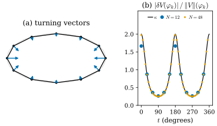
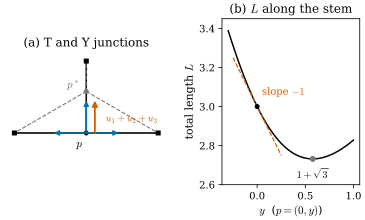

46.5 First Variation and Generalized Mean Curvature
Goals
- varifold의 first variation \(\delta V(X) = \int\divg_SX\,dV\)를 정의하고, 그것이 vector field \(X\)의 flow로 밀 때 mass가 변하는 비율이라는 것을 증명할 수 있다.
- smooth surface에서 \(\delta V(X) = -\int\inner{\vec H}{X}\,dA\)(+ boundary 항)이고 \(\vec H = 2H\mathbf{N}\)임을 이 study set의 부호로 유도하고, 논문들의 기호와 대응시킬 수 있다.
- bounded first variation, generalized mean curvature \(\vec H\), singular part, stationary varifold를 정의하고, polygon(turning vector), 선분의 끝점, junction, 밀도가 고르지 않은 curve, staircase의 극한에서 계산할 수 있다.
- triangle mesh의 first variation을 hat function으로 시험한 것이 cotan 공식 \(-(L\mathbf{x})_i\)이고, 그 singular part가 edge의 bending에 모인다는 것을 Track 2의 결과와 이어서 설명할 수 있다.
Prerequisites
- Section 46.3: tangential divergence와 늘어나는 비율(Definition 46.3.5, Proposition 46.3.6). Section 46.4: varifold, rectifiable varifold, point cloud varifold, staircase의 극한(Example 46.4.10). Section 46.2: Riesz representation과 density(Theorem 46.2.10, Theorem 46.2.13).
- Track 2: 길이의 first variation(Proposition 32.2.3)과 polygon 길이의 gradient(Proposition 32.3.6), mean curvature vector(Proposition 39.3.1), 넓이의 first variation(Proposition 41.2.1), area gradient와 cotan 공식(Theorem 41.2.7, Proposition 40.3.6)
Motivation
Track 2에서 mean curvature는 넓이의 gradient였다. 닫힌 surface를 normal 방향으로 \(\varphi\)만큼 밀면 넓이가 \(-\int2H\varphi\,dA\)의 비율로 변했다(Proposition 41.2.1). 이 정의는 surface가 매끄러울 필요가 없다는 장점이 있다. 넓이를 정의할 수 있고 움직일 수 있으면 된다. varifold는 넓이(mass)가 있고, vector field로 움직일 수 있다. Section 46.3에서 방향 \(S\)인 작은 조각이 \(X\)로 늘어나는 비율이 \(\divg_SX\)였으므로, varifold 전체의 넓이가 변하는 비율은 \(\divg_SX\)를 varifold로 적분한 것이다. 이것이 first variation이다. 이 절은 이 하나의 정의에서 smooth surface의 mean curvature, polygon의 turning vector, junction의 균형 조건, mesh의 cotan 공식이 모두 나온다는 것을 보인다.
First Variation
Definition 46.5.1 (first variation). \(\Omega\) 위의 \(d\)-varifold \(V\)와 compact support를 갖는 \(C^1\) vector field \(X\colon\Omega \to \R^n\)에 대해
를 \(V\)의 first variation(제1변분)이라 한다. \(\divg_SX = \tr(S\,DX)\)는 tangential divergence다((46.3.3)). [BLM17, Def. 2.9], [BLM22, Def. 2.10].
\(\delta V\)는 \(X\)에 대해 linear이고, \(X\)의 값이 아니라 도함수 \(DX\)를 쓴다. 그래서 \(\delta V\)는 measure가 아니라 “한 번 미분한 것까지 보는” 범함수(order 1의 vector-valued distribution)다. 스칼라 함수 \(\varphi\)에는 \(\delta V(\varphi) = \big(\delta V(\varphi e_1), \dots, \delta V(\varphi e_n)\big)\) \(= \int S\nabla\varphi\,dV \in \R^n\)으로 쓰는 것이 편하다 [BLM17, Remark 2.10]. \(X\)가 Lipschitz이고 미분할 수 없는 점들이 \(\norm{V}\)-null이면 (46.5.1)은 그대로 정의된다. 아래의 hat function이 그런 예다.
이 정의가 “넓이의 변화율”이라는 것을 보이려면 varifold를 map으로 움직이는 법이 필요하다. \(f\)가 \(C^1\) diffeomorphism이면 varifold의 image \(f_\#V\)는 위치를 \(f(x)\)로, plane을 \(Df_x(S)\)로 옮기고, mass에 넓이의 배율을 곱한 것이다.
여기서 \(J_Sf(x)\)는 \(S\)의 unit cube를 \(Df_x\)로 옮긴 parallelepiped의 \(d\)차원 부피다. Definition 46.2.11의 measure의 push-forward와 달리 \(J_Sf\)가 곱해져 있다는 점에 주의하자. surface를 늘이면 넓이도 늘어야 하기 때문이다. smooth surface \(M\)이면 \(f_\#v(M, 1) = v(f(M), 1)\)이다(Theorem 46.2.4(b)의 area formula).
Proposition 46.5.2 (first variation is the rate of change of mass). \(X\)의 flow를 \(\varphi_t\)라 하고 \(V_t = (\varphi_t)_\#V\)라 하자. \(A \subseteq \Omega\)가 \(\supp X\)를 포함하는 open set이고 \(\norm{V}(A) \lt \infty\)이면
\[ \frac{d}{dt}\norm{V_t}(A)\Big|_{t=0} = \delta V(X) \]
이다. [BLM17, Remark 2.10].
Proof. \(\varphi_t\)는 \(\supp X\) 밖에서 identity이므로 \(\varphi_t(A) = A\)이다. (46.5.2)에 \(A\)의 indicator를 넣으면 \(\norm{V_t}(A) = \int_{A \times G_{d,n}}J_S\varphi_t(x)\,dV(x, S)\)이다. \(J_S\varphi_t\)는 \(t\)에 대해 매끄럽고 compact set 위에서 고르게 bound되므로 적분 안에서 미분할 수 있고, Proposition 46.3.6에서 \(\tfrac{d}{dt}J_S\varphi_t(x)|_{t=0} = \divg_SX(x)\)이다.
polygon에서 이것을 직접 확인할 수 있다. ellipse에 내접한 12각형(Figure 46.5.1의 polygon)의 vertex를 \(\mathbf{x} \mapsto \mathbf{x} + hX(\mathbf{x})\)로 옮긴 polygon의 길이의 미분은 \(\delta V(X)\)를 quadrature로 계산한 값과 \(10^{-6}\) 이내로 같다(verify). 점들이 없는 곳에서 \(X\)가 무엇이든 상관없다. varifold가 있는 곳의 \(DX\)만 쓰인다.
Smooth Surfaces: The Mean Curvature Vector
Proposition 46.5.3 (first variation of a smooth curve or surface). \(M\)이 compact한 \(C^2\) \(d\)-submanifold(boundary \(\partial M\)이 있어도 된다)이고 \(V = v(M, 1)\)이면, 모든 \(C^1\) vector field \(X\)에 대해
이다. \(\eta\)는 \(\partial M\)의 outward unit conormal(\(M\)에 접하고 \(\partial M\)에 수직이며 바깥을 향하는 unit vector)이고, \(\vec H\)는 \(M\)의 mean curvature vector로 다음과 같다.
첫 줄은 \(\R^2\)의 curve(\(d = 1\), \(n = 2\)), 둘째 줄은 \(\R^3\)의 surface(\(d = 2\), \(n = 3\))다. 둘째 줄의 \(H = \tfrac12\tr W\), \(W = -d\mathbf{N}\)은 이 study set의 mean curvature이고, \(2H\mathbf{N}\)은 \(\mathbf{N}\)의 선택에 무관하다.
Proof idea: \(X\)를 tangent 성분과 normal 성분으로 나눈다. tangent 성분은 surface 위의 divergence theorem으로 boundary 항이 되고, normal 성분은 \(\divg_M(\varphi\mathbf{N}) = -2H\varphi\)를 준다.
Derivation. curve. arc length \(s\)로 parametrization된 \(\gamma\colon[0, L] \to \R^2\)에서 \(P = \mathbf{t}\mathbf{t}^{\mathsf T}\)이므로 \(\divg_PX = \inner{DX\,\mathbf{t}}{\mathbf{t}} = \inner{(X\circ\gamma)'}{\mathbf{t}}\)이다. 부분적분하면
\[ \begin{aligned} \int_0^L\inner{(X\circ\gamma)'}{\mathbf{t}}\,ds &= \big[\inner{X}{\mathbf{t}}\big]_0^L \\ &\quad - \int_0^L\inner{X}{\mathbf{t}'}\,ds \end{aligned} \]
이고 \(\mathbf{t}' = \kappa_s\mathbf{n}_s\)이다. 끝점 \(\gamma(L)\)에서 \(\eta = \mathbf{t}\), 시작점에서 \(\eta = -\mathbf{t}\)이므로 boundary 항이 (46.5.3)의 마지막 항이다. 닫힌 curve이면 boundary 항이 없고 이것은 Proposition 32.2.3이다.
surface. \(M\) 위에서 \(X = X^{\top} + \varphi\mathbf{N}\)(\(X^{\top} = PX\), \(\varphi = \inner{X}{\mathbf{N}}\))으로 나눈다. \(\mathbf{N}\)을 \(M\) 근처로 아무렇게나 \(C^1\) 확장하면 \(D(\varphi\mathbf{N}) = \mathbf{N}\,(\nabla\varphi)^{\mathsf T} + \varphi\,D\mathbf{N}\)이고, \(P\mathbf{N} = 0\)이므로
\[ \begin{aligned} \divg_M(\varphi\mathbf{N}) &= \tr\big(P\,\mathbf{N}(\nabla\varphi)^{\mathsf T}\big) + \varphi\tr(P\,D\mathbf{N}) \\ &= \varphi\sum_{i=1}^2\inner{d\mathbf{N}(e_i)}{e_i} = -2H\varphi \end{aligned} \]
이다(\(e_1, e_2\)는 \(T_xM\)의 orthonormal basis이고 \(\sum_i\inner{d\mathbf{N}(e_i)}{e_i} = \tr d\mathbf{N} = -\tr W\)). 확장에 무관하다. \(P\)가 tangent 방향의 도함수만 남기기 때문이다. tangent field \(X^{\top}\)의 \(\divg_MX^{\top}\)는 surface 위의 intrinsic divergence와 같고, surface 위의 divergence theorem(Section 18.5)에서 \(\int_M\divg_MX^{\top}\,dA\) \(= \int_{\partial M}\inner{X^{\top}}{\eta}\,ds\) \(= \int_{\partial M}\inner{X}{\eta}\,ds\)이다. 더하면 \(\delta V(X) = -\int_M\inner{2H\mathbf{N}}{X}\,dA\) \(+ \int_{\partial M}\inner{X}{\eta}\,ds\)이다. 닫힌 surface에서 이것은 Proposition 41.2.1의 넓이 식 \(\tfrac{d}{dt}A = -\int2H\varphi\,dA\)이고, \(\Delta_M\mathbf{x} = 2H\mathbf{N}\)은 study set의 규약이다(notation).
바깥쪽 \(\mathbf{N}\)을 고른 반지름 \(r\)인 sphere에서 \(H = -1/r\)이므로 \(\vec H = -\tfrac2r\mathbf{N}\)이다. 중심 쪽을 향하고 크기가 \(\tfrac2r\)다. 반지름 \(r\)인 circle(반시계 방향)에서는 \(\vec H = \kappa_s\mathbf{n}_s = -\mathbf{x}/r^2\), 역시 중심 쪽이고 크기 \(\tfrac1r\)이다. (46.5.3)의 부호는 “\(X\)를 \(\vec H\) 방향으로 잡으면 넓이가 준다”는 것이다. \(\vec H\)는 넓이를 가장 빨리 줄이는 방향이고(이 방향으로 surface를 움직이는 것이 mean curvature flow \(\partial_t\mathbf{x} = \vec H\)다), smooth surface에서는 Tour의 (0.4.3) \(\Delta_S\mathbf{x} = 2H\mathbf{N}\)의 우변과 같다. verify는 circle, ellipse, sphere, torus \(T_{2,0.8}\)에서 (46.5.3)의 양변을 무작위 vector field로 비교한다.
Bounded First Variation and Generalized Mean Curvature
(46.5.3)의 오른쪽은 \(X\)의 값만 쓴다. 도함수가 사라졌다. 그래서 \(\abs{\delta V(X)} \le C\sup\abs{X}\)이고, Riesz representation theorem(Theorem 46.2.10(b))에 의해 \(\delta V\)는 vector-valued measure다. 이 성질을 일반 varifold의 정의로 삼는다.
Definition 46.5.4 (bounded first variation and generalized mean curvature). varifold \(V\)가 bounded first variation(유계 제1변분)을 갖는다는 것은 compact set \(K \subseteq \Omega\)마다 상수 \(c_K\)가 있어 \(\supp X \subseteq K\)인 모든 \(X\)에서 \(\abs{\delta V(X)} \le c_K\sup\abs{X}\)인 것이다(정확히는 locally bounded). 이때 \(\delta V\)는 vector-valued Radon measure로 확장되고, Theorem 46.2.13으로 \(\norm{V}\)에 대해 분해하면
이다. \(\vec H \in L^1_{\mathrm{loc}}(\norm{V}; \R^n)\)를 \(V\)의 generalized mean curvature(일반화된 평균곡률) vector라 하고, \(\norm{V}\)에 대해 singular인 \(\delta V_s\)를 singular part라 한다. 곧 \(\delta V(X) = -\int\inner{\vec H}{X}\,d\norm{V} + \delta V_s(X)\)이다. [BLM17, Remark 2.10, (2.1)].
smooth surface이면 \(\vec H\)는 (46.5.4)이고 \(\delta V_s\)는 boundary 위의 conormal measure \(\eta\,\mathcal{H}^{d-1}\llcorner\partial M\)이다. generalized mean curvature는 smooth surface의 mean curvature vector를, 넓이가 있고 넓이의 미분이 measure인 모든 대상으로 넓힌 것이다. 아래 예들이 singular part가 무엇을 담는지 보여 준다. 꺾인 점, 끝점, junction, edge처럼 “넓이 \(0\)인 곳에 모인 curvature”다.
Definition 46.5.5 (stationary varifold). 모든 \(X\)에서 \(\delta V(X) = 0\)인 varifold를 stationary varifold(정상 바리폴드)라 한다. 곧 \(\vec H = 0\)이고 \(\delta V_s = 0\)이다.
stationary varifold는 minimal surface의 일반화다. 넓이를 1차까지 바꾸는 변형이 없다. 직선, 평면, minimal surface, 그리고 아래에서 보듯 교차하는 두 직선과 \(120^\circ\) triple junction이 그 예다.
Examples: Corners, Ends, and Junctions
Example 46.5.6 (polygons: turning vectors). 닫힌 polygon(vertex \(\gamma_k\), edge \(\gamma_k\gamma_{k+1}\)의 unit tangent \(\mathbf{t}_k\))의 varifold \(V = \sum_k\mathcal{H}^1\llcorner[\gamma_k, \gamma_{k+1}] \otimes \delta_{P_k}\)에서, edge 하나의 몫은 (46.5.3)의 curve 식(\(\vec H = 0\))으로 \(\inner{X(\gamma_{k+1}) - X(\gamma_k)}{\mathbf{t}_k}\)이다. vertex마다 모으면
이다. \(\mathbf{t}_k - \mathbf{t}_{k-1} = \kappa^B_k\mathbf{n}_k\)(\(\kappa^B_k = 2\sin(\theta_k/2)\), \(\theta_k\)는 turning angle)는 vertex의 turning vector다. 곧 \(\delta V(X) = \sum_k\inner{\nabla_{\gamma_k}L}{X(\gamma_k)}\)이고 \(\nabla_{\gamma_k}L = \mathbf{t}_{k-1} - \mathbf{t}_k\)는 Proposition 32.3.6의 길이의 gradient다. polygon은 bounded first variation을 갖고, \(\vec H = 0\)(edge는 곧다)이며 curvature는 모두 singular part, 곧 vertex의 Dirac mass에 있다.
Verification: verify/v-46-5-first-variation.py
Figure 46.5.1(a)는 ellipse \((2\cos t, \sin t)\)에 내접한 12각형(vertex \(t_k = 2\pi k/12\))의 turning vector다. 모두 안쪽을 향하고, curvature가 큰 양 끝(\(t = 0, \pi\), \(\kappa = 2\))에서 길고(\(0.9447\)) 납작한 위아래(\(\kappa = 0.25\))에서 짧다(\(0.2656\)). 이 polygon에서는 turning vector가 smooth curve의 \(\int\kappa\mathbf{n}\,ds\)를 dual arc \([t_{k-1/2}, t_{k+1/2}]\) 위에서 적분한 값 \(\mathbf{T}(t_{k+1/2}) - \mathbf{T}(t_{k-1/2})\)와 정확히 같다. ellipse는 circle의 affine image라서 현 \(\gamma_k\gamma_{k+1}\)이 \(t_{k+1/2}\)의 tangent와 평행하기 때문이다. 곧 polygon의 \(\delta V\)는 smooth curve의 \(\delta V = -\kappa\mathbf{n}\,ds\)를 dual arc마다 한 점에 모은 것이다.
점마다의 curvature 값을 얻으려면 이 singular measure를 mass로 나누어야 한다. (b)는 vertex \(k\)의 hat function \(\varphi_k\)(vertex에서 \(1\), 이웃 vertex에서 \(0\), edge 위에서 linear)로 first variation과 mass를 함께 시험한 비 \(\abs{\delta V(\varphi_k)}/\norm{V}(\varphi_k) = \abs{\mathbf{t}_k - \mathbf{t}_{k-1}}\big/\tfrac12(\ell_{k-1} + \ell_k)\)를 smooth curvature \(\kappa\)(검정)와 비교한 것이다. \(N = 12\)이면 \(t = 0\)에서 \(1.6653\)(정답 \(2\)), \(t = 90^\circ\)에서 \(0.2632\)(정답 \(0.25\))이고, \(N = 48\)이면 \(1.9747\)과 \(0.2508\)로 다가간다. first variation을 “부드러운 함수로 시험해서 mass로 나눈다”는 이 생각이 [BLM17]의 approximate mean curvature의 핵심이다(Section 46.7, Chapter 47).

Example 46.5.7 (an open segment: the boundary). \(a\)에서 \(b\)까지의 선분(unit tangent \(\mathbf{t}\))의 varifold는 \(\delta V(X) = \inner{X(b) - X(a)}{\mathbf{t}}\), 곧 \(\delta V = \mathbf{t}\,\delta_b - \mathbf{t}\,\delta_a\)이다. \(\vec H = 0\)이고 singular part는 끝점의 outward conormal(\(b\)에서 \(\mathbf{t}\), \(a\)에서 \(-\mathbf{t}\))이다. 끝점을 바깥으로 밀면 길이가 는다. 선분은 interior에서는 stationary이지만 끝점 때문에 stationary가 아니다.
Example 46.5.8 (junctions). 점 \(p\)에서 unit vector \(u_1, \dots, u_m\) 방향으로 나가는 half-line의 합집합 \(M\)과 \(V = v(M, 1)\)을 생각하자. \(\supp X\)가 \(p\) 근처의 작은 ball 안에 있으면, 각 half-line은 Example 46.5.7에서 시작점 \(p\)의 항 \(-\inner{X(p)}{u_l}\)만 주므로
이다. 그래서 \(V\)가 \(p\) 근처에서 stationary인 것은 \(\sum_lu_l = 0\)인 것과 같다. 세 half-line(\(m = 3\))이면 세 unit vector의 합이 \(0\)이어야 하고, 이것은 사이의 각이 모두 \(120^\circ\)라는 것이다(Y junction). 교차하는 두 직선(\(\pm u, \pm v\))은 언제나 stationary다. 반면 T junction(\(u_1 = e_1\), \(u_2 = -e_1\), \(u_3 = e_2\))은 \(\sum u_l = e_2\)라서 \(\delta V = -e_2\,\delta_p\)이다.
Verification: verify/v-46-5-first-variation.py
Figure 46.5.2가 이 계산의 뜻이다. (a)의 검은 T는 세 끝점 \((\pm1, 0)\), \((0, 1)\)을 \(p = (0, 0)\)에서 잇는다. 파란 화살표가 \(u_l\), 주홍 화살표가 그 합 \(e_2\)다. (46.5.7)에서 \(p\)를 \(X(p)\)로 움직일 때 전체 길이는 \(-\inner{\sum u_l}{X(p)}\)의 비율로 변하므로, 주홍 화살표 쪽으로 \(p\)를 옮기면 길이가 가장 빨리 준다. (b)는 \(p = (0, y)\)로 줄기를 따라 옮길 때의 전체 길이 \(L(y) = 2\sqrt{1 + y^2} + (1 - y)\)이다. \(y = 0\)에서 기울기가 \(-1 = -\abs{\sum u_l}\)이고, \(y = 1/\sqrt3\)에서 최솟값 \(1 + \sqrt3 = 2.7321\)에 이른다(T의 길이는 \(3\)). 그곳 \(p^*\)(점선)에서 세 선분은 \(120^\circ\)를 이루고 \(\sum u_l = 0\)이다. 비누막의 Plateau 법칙과 Steiner tree의 \(120^\circ\) 조건이 이것이다. [BLM17]은 이런 junction과 double bubble에서 approximate mean curvature를 계산해 보인다(Chapter 47).

Example 46.5.9 (a curve with a varying density). 닫힌 \(C^2\) curve \(C\)(arc length \(s\))에 smooth multiplicity \(\theta \gt 0\)을 준 \(V = v(C, \theta)\)에서는 \(\delta V(X) = \int\theta\inner{(X\circ\gamma)'}{\mathbf{t}}\,ds\) \(= -\int\inner{X}{(\theta\mathbf{t})'}\,ds\)이고 \((\theta\mathbf{t})' = \theta\kappa_s\mathbf{n}_s + \theta'\mathbf{t}\)이다. \(\norm{V} = \theta\,ds\)이므로
\[ \vec H = \kappa_s\mathbf{n}_s + \frac{\theta'}{\theta}\,\mathbf{t} \]
이다. normal 성분은 curve의 진짜 curvature이고, tangent 성분 \(\theta'/\theta\)는 밀도가 고르지 않아서 생긴 가짜다. curve의 모양은 그대로 두고 그 위의 점들을 밀도가 높은 쪽으로 밀면, 밀도가 높은 부분은 줄어들고 낮은 부분은 늘어나서 mass가 줄기 때문이다. Example 46.2.7의 equal-weight point cloud의 극한(unit circle, \(\theta = 1/(1 + 0.5\cos2\pi u)\))에서 \(\abs{\theta'/\theta}\)는 최대 \(0.847\)(\(t \approx 2.73\), 곧 \(156.6^\circ\))로, 진짜 curvature \(1\)과 크기가 비슷하다.
Verification: verify/v-46-5-first-variation.py
이것이 [BLM17, §8.1.4]가 고르지 않게 sampling한 point cloud에서 approximate mean curvature를 tangent plane의 normal 방향으로 정사영하는 이유다. 정사영하면 tangent 쪽의 가짜 성분이 사라지고, 정사영하지 않으면 sampling의 불균일이 오차로 남는다. integral varifold에서는 \(\vec H\)가 거의 어디서나 tangent plane에 수직이라는 Brakke의 정리가 있지만([Brakke78], [BLM22]의 Introduction이 인용한다), mass가 정수가 아닌 데이터에는 이 정리가 적용되지 않는다.
Compactness and the Staircase Again
first variation이 bound되면 극한이 좋은 대상이 된다. 이것이 varifold 이론의 기둥인 Allard의 정리다.
Theorem 46.5.10 (Allard's compactness theorem for integral varifolds). \(V_k\)가 \(\Omega\) 위의 integral \(d\)-varifold이고 bounded first variation을 가지며, 모든 compact set \(K \subseteq \Omega\)에서
\[ \sup_k\big(\norm{V_k}(K) + \norm{\delta V_k}(K)\big) \lt \infty \]
이면(\(\norm{\delta V_k}\)는 \(\delta V_k\)의 total variation), 부분열 \(V_{k_j}\)와 bounded first variation을 갖는 integral varifold \(V\)가 있어 \(V_{k_j} \overset{*}{\rightharpoonup} V\)이다.
증명은 [Allard72]와 [Simon83, Theorem 42.7]에 있다. 정리가 말하는 것은 이것이다. 넓이와 “curvature의 총량”이 함께 bounded인 surface의 열은, 부분열을 잡으면 다시 integral varifold(곧 정수 multiplicity의 rectifiable 대상)로 수렴한다. Proposition 46.4.9(b)는 넓이만 bounded이면 어떤 varifold로든 수렴한다고 했는데, curvature까지 bounded이면 극한이 rectifiable로 남는다는 것이다. [BLM17, Thm. 3.6]은 integral이 아닌 일반 varifold의 열(예: point cloud)에 대해, first variation 대신 그것을 kernel로 부드럽게 한 것으로 비슷한 정리를 증명한다(Chapter 47).
Example 46.5.11 (the staircase limit has unbounded first variation). staircase \(S_n\)은 integral varifold이고 mass가 \(2\)로 bounded이지만, (46.5.6)에서 \(\norm{\delta v(S_n, 1)} = \sum\abs{\mathbf{t}_k - \mathbf{t}_{k-1}}\) \(= (2n - 1)\sqrt2 + 2\)(모서리마다 \(\sqrt2\), 끝점마다 \(1\))로 발산한다(\(n = 16\)이면 \(45.84\)). 그래서 Theorem 46.5.10을 쓸 수 없고, 실제로 극한 \(V_\infty\)는 rectifiable이 아니었다(Exercise 46.4.3). 극한 자체의 first variation을 계산하자. \(\divg_{P_h}X = \partial_1X_1\), \(\divg_{P_v}X = \partial_2X_2\)이므로 (46.4.5)에서
\[ \begin{aligned} \delta V_\infty(X) &= \sqrt2\int_D\tfrac12(\partial_1X_1 + \partial_2X_2)\,d\mathcal{H}^1 \\ &= \tfrac{\sqrt2}{2}\int_D\divg X\,d\mathcal{H}^1 \end{aligned} \]
이다. 이것은 \(\sup\abs{X}\)로 bound되지 않는다. bump \(\psi\)(중심 \((0.5, 0.5)\), 반지름 \(0.4\))로 \(X_k = \psi(x)\big(\sin(k(x_1 - x_2)), 0\big)\)를 잡으면 \(\sup\abs{X_k} \le 1\)이지만, \(D\) 위에서 \(x_1 = x_2\)라 \(\divg X_k = k\psi\)이므로 \(\delta V_\infty(X_k) = \tfrac{\sqrt2}{2}k\int_D\psi\,d\mathcal{H}^1 = 0.3414\,k\)(\(\int_D\psi = 0.4828\))로 발산한다. 같은 \(X_k\)에서 대각선의 varifold는 \(\delta v(D, 1)(X_k) = 0\)이다. \(D\)를 따라 미분하면 \(\sin(k(x_1 - x_2))\)가 변하지 않기 때문이다. \(V_\infty\)는 bounded first variation을 갖지 않으므로 generalized mean curvature도 없다.
Verification: verify/v-46-5-first-variation.py
그러나 \(\delta V\)는 varifold의 수렴과 함께 수렴한다. \(\divg_SX(x)\)가 \((x, S)\)의 continuous function이라서, \(V_k \overset{*}{\rightharpoonup} V\)이면 모든 \(X\)에서 \(\delta V_k(X) \to \delta V(X)\)이다. staircase에서도 \(\delta v(S_n, 1)(X_{20})\)은 \(n = 50, 200, 800\)에서 \(6.632\), \(6.815\), \(6.826\)으로 \(\delta V_\infty(X_{20}) = 6.827\)에 다가간다. 수렴하는 것은 distribution으로서의 \(\delta V\)이고, 점마다의 curvature \(\vec H\)는 따라오지 않는다. Section 46.1의 표 넷째 줄이 이것이다.
Triangle Meshes and the Cotan Formula
polyhedral surface의 varifold \(V = \sum_F\mathcal{H}^2\llcorner F \otimes \delta_{P_F}\)(Example 46.4.5(d))에서도 같은 계산을 할 수 있다. face 하나는 평평하므로 \(\vec H = 0\)이고, face의 boundary가 singular part를 준다. edge \(e\)를 공유하는 두 face \(f, g\)의 outward conormal을 \(\eta_f, \eta_g\)라 하자(face 안에 있고, \(e\)에 수직이며, face 밖을 향하는 unit vector).
Proposition 46.5.12 (first variation of a triangle mesh). boundary가 없는 triangle mesh의 varifold \(V\)에 대해
이다. \(\abs{\eta_f + \eta_g} = 2\sin(\theta_e/2)\)(\(\theta_e\)는 edge의 bending angle)이다. vertex \(i\)의 hat function \(\varphi_i\)로 시험하면
\[ \begin{aligned} \delta V(\varphi_i) &= \sum_{F \ni i}A_F\,\nabla^{P_F}\varphi_i = \nabla_{\mathbf{x}_i}A = -(L\mathbf{x})_i, \\ \norm{V}(\varphi_i) &= \tfrac13\sum_{F \ni i}A_F \end{aligned} \]
이다. \(\nabla^{P_F}\varphi_i\)는 face \(F\) 안에서의 gradient, \(L\)은 cotan Laplacian, \(A\)는 mesh의 넓이다.
Proof. face \(F\) 위에서 \(P_F\)는 상수이므로 \(\divg_{P_F}X = \divg_F(P_FX)\)이고, 평면 영역 \(F\)의 divergence theorem(Proposition 35.4.12(b))으로 \(\int_F\divg_{P_F}X\,dA = \int_{\partial F}\inner{P_FX}{\eta_F}\,ds\) \(= \int_{\partial F}\inner{X}{\eta_F}\,ds\)이다(\(\eta_F\)는 \(F\)의 평면 안에 있다). face마다 더하면 edge마다 두 conormal이 모여 (46.5.8)이 된다. 두 conormal은 각각 face normal을 edge 둘레로 \(90^\circ\) 돌린 것이라 그 사이의 각이 \(\pi - \theta_e\)이고, 합의 길이는 \(2\sin(\theta_e/2)\)다. hat function은 face마다 affine이라 \(\nabla^{P_F}\varphi_i\)가 face 위에서 상수이므로 첫 등식이 나온다. \(\varphi_ie\)는 vertex \(i\)만 \(e\) 방향으로 움직이는 piecewise linear 변형이므로 Proposition 46.5.2에서 둘째 등식이 나오고, 셋째는 Theorem 41.2.7이다. hat function을 face 위에서 적분하면 넓이의 \(\tfrac13\)이다.
세 가지가 한 그림에 모인다. (46.5.8)에서 \(\varphi_i\)를 넣으면, edge \(ij\) 위의 \(\int_e\varphi_i\,ds = \ell_{ij}/2\)이므로 \(\delta V(\varphi_i) = \sum_{j \sim i}\ell_{ij}\sin(\theta_{ij}/2)\bar{\mathbf{N}}_{ij}\)이다. 이것이 Track 2의 edge form Proposition 40.3.6(\((L\mathbf{x})_i = -\sum\ell_{ij}\sin(\theta_{ij}/2)\bar{\mathbf{N}}_{ij}\))이다. 곧 mesh의 curvature는 edge의 bending에 모인 singular measure이고, cotan 공식은 그 measure를 vertex의 hat function으로 시험한 것이다. [BLM17, Prop. 7.1]은 이것을 “cotangent formula의 varifold 해석”으로 제시하고, [BLM17, Remark 7.2]는 \(-\delta V(\varphi_i)/\norm{V}(\varphi_i)\)를 vertex의 mean curvature vector로 쓰자고 한다. 분모가 barycentric area이므로 이것은 Definition 40.3.3의 \((L\mathbf{x})_i\)를 barycentric area로 나눈 것이다.
Remark 46.5.13 (numbers for the cotan ratio).
(a) 높이 \(0.4\)인 정육각뿔 one-ring(밑면 반지름 \(1\))의 apex에서 \(\delta V(\varphi_0) = (0, 0, 1.2579)\)이고 \(\norm{V}(\varphi_0) = 0.9539\)이다. apex를 올리면 넓이가 늘어나므로 위를 향하고, \(\vec H\)에 해당하는 \(-\delta V(\varphi_0)/\norm{V}(\varphi_0)\)는 아래(평평해지는 쪽)를 향한다. (b) unit sphere의 icosphere(4)에서 \(\abs{\delta V(\varphi_i)}/\norm{V}(\varphi_i)\)는 valence 6인 vertex에서 \([1.9939, 2.0029]\)로 정답 \(\abs{\vec H} = 2\)에 가깝지만, valence 5인 vertex(원래 정이십면체의 vertex 12개)에서는 \(2.2903\)이다. \(-\delta V(\varphi_i)\)는 모두 안쪽을 향한다. barycentric area로 나눈 cotan 공식이 점마다 수렴하지 않을 수 있다는 것은 Part IV의 4-8 cylinder(Example 31.2.8)에서도 보았다. measure로서의 \(\delta V\)는 정확하고, 점마다의 값은 무엇으로 나누느냐에 달렸다.
Verification: verify/v-46-5-first-variation.py
Summary
- first variation \(\delta V(X) = \int\divg_SX\,dV\)는 \(X\)의 flow로 민 varifold의 mass가 변하는 비율이다((46.5.1), Proposition 46.5.2). 움직인 varifold에는 넓이의 배율 \(J_Sf\)를 곱한다((46.5.2)).
- smooth surface에서 \(\delta V(X) = -\int\inner{\vec H}{X}\,dA + \int_{\partial M}\inner{X}{\eta}\)이고 \(\vec H = 2H\mathbf{N} = \Delta_M\mathbf{x}\)(curve는 \(\kappa_s\mathbf{n}_s\))이다. 반지름 \(r\)인 sphere에서 \(\vec H\)는 안쪽, 크기 \(2/r\)이다. 논문들의 mean curvature vector는 이 \(\vec H\)다(Proposition 46.5.3, Conventions 상자).
- \(\delta V\)가 \(\sup\abs{X}\)로 bound되면 \(\delta V = -\vec H\norm{V} + \delta V_s\)로 나뉘고, \(\vec H\)가 generalized mean curvature다. \(\delta V = 0\)이면 stationary다((46.5.5)).
- polygon의 curvature는 vertex의 turning vector, 선분의 끝점은 conormal, junction은 \(-\sum u_l\)에 모인다. \(120^\circ\) Y와 교차하는 두 직선은 stationary다. 밀도가 고르지 않으면 \(\vec H\)에 가짜 tangent 성분 \(\theta'/\theta\)가 생긴다(Example 46.5.6–Example 46.5.9).
- mass와 \(\norm{\delta V}\)가 bounded인 integral varifold의 열은 integral varifold로 수렴한다(Allard). staircase는 \(\norm{\delta V}\)가 발산하고, 극한은 bounded first variation을 갖지 않는다(Theorem 46.5.10, Example 46.5.11).
- mesh의 first variation은 edge의 bending에 모이고, hat function으로 시험하면 cotan 공식 \(-(L\mathbf{x})_i\)이다(Proposition 46.5.12).
다음 절에서는 mean curvature에서 second fundamental form 전체로 넘어간다. tangent plane의 projection \(P(x)\)를 surface를 따라 미분하면 second fundamental form이 나오고, 그 미분을 first variation과 같은 방식으로 “적분으로” 정의한 것이 Hutchinson의 curvature varifold다. [BLM22]의 출발점이다.
Quick check
Exercise 46.5.1 ★ 반지름 \(r\)인 circle의 varifold와 vector field \(X(\mathbf{x}) = \mathbf{x}\)(확대)에서 \(\delta V(X)\)를 정의 (46.5.1)과 (46.5.3)로 각각 계산하고, 둘레 \(2\pi r\)의 변화율과 비교하여라.
Solution
\(DX = I\)이므로 \(\divg_PX = \tr P = 1\)이고 \(\delta V(X) = 2\pi r\)이다. (46.5.3)로는 \(\vec H = -\mathbf{x}/r^2\)이므로 \(-\int\inner{-\mathbf{x}/r^2}{\mathbf{x}}\,ds = \int1\,ds = 2\pi r\)이다. 확대 \(\mathbf{x} \mapsto (1 + t)\mathbf{x}\)로 둘레는 \(2\pi r(1 + t)\)이고 변화율은 \(2\pi r\)이다. 셋이 같다.
Verification: verify/v-46-5-first-variation.py
Exercise 46.5.2 ★ 한 변이 \(1\)인 정사각형 boundary의 varifold의 first variation을 구하여라. bounded first variation을 갖는가? generalized mean curvature와 singular part는 무엇인가? 넷째 vertex를 바깥으로 조금 밀면 둘레는 어떻게 변하는가?
Solution
(46.5.6)에서 vertex마다 \(\mathbf{t}_{k-1} - \mathbf{t}_k\)다. 반시계 방향으로 돌면 vertex \((1, 1)\)에서 \(\mathbf{t}_{k-1} = e_2\), \(\mathbf{t}_k = -e_1\)이므로 \(e_1 + e_2\)이고, 다른 vertex도 바깥 대각선 방향의 \(\sqrt2\) 길이 vector다. 곧 \(\delta V = \sum_k\sqrt2\,\hat d_k\,\delta_{c_k}\)(\(\hat d_k\)는 중심에서 vertex \(c_k\)로의 unit vector)이고, total variation \(4\sqrt2\)로 bounded다. 변 위에서 \(\vec H = 0\)이고 curvature는 모두 singular part다. vertex 하나를 바깥 대각선 방향으로 \(h\)만큼 밀면 둘레는 \(\sqrt2h\)의 비율로 는다.
Verification: verify/v-46-5-first-variation.py
Exercise 46.5.3 ★ 원점에서 네 unit vector \(u_l\)(각 \(0^\circ, 90^\circ, 180^\circ, 225^\circ\)) 방향으로 나가는 half-line의 varifold는 stationary인가? 아니면 원점을 어느 쪽으로 움직여야 전체 길이가 가장 빨리 주는가?
Solution
\(\sum u_l = (1, 0) + (0, 1) + (-1, 0)\) \(+ (-\tfrac{\sqrt2}{2}, -\tfrac{\sqrt2}{2}) = (-0.7071, 0.2929)\)로 \(0\)이 아니므로 stationary가 아니다. (46.5.7)에서 \(\delta V = -(\sum u_l)\delta_0\)이고, 길이의 변화율은 \(-\inner{\sum u_l}{X(0)}\)이므로 \(X(0)\)을 \(\sum u_l\) 방향, 곧 \((-0.7071, 0.2929)/0.7654\) 쪽으로 잡을 때 가장 빨리 준다(비율 \(0.7654\)).
Verification: verify/v-46-5-first-variation.py
Exercise 46.5.4 ★★ point cloud varifold \(V = \sum_im_i\delta_{x_i} \otimes \delta_{P_i}\)의 first variation을 쓰고, bounded first variation을 갖지 않음을 보여라(\(N \ge 1\), \(d \ge 1\)). 이것이 point cloud에서 generalized mean curvature를 바로 정의할 수 없는 이유다.
Solution
\(\delta V(X) = \sum_im_i\divg_{P_i}X(x_i)\) \(= \sum_im_i\tr(P_i\,DX(x_i))\)이다. \(x_1\)에서 \(P_1\)의 unit vector \(u\)를 잡고 \(X(x) = \psi(x)\sin(k\inner{u}{x - x_1})\,u\)(\(\psi\)는 \(x_1\)에서 \(1\)이고 다른 점들을 피하는 작은 bump)라 하자. \(\sup\abs{X} \le 1\)이지만 \(DX(x_1) = k\,uu^{\mathsf T}\)이므로 \(\delta V(X) = m_1k\tr(P_1uu^{\mathsf T}) = m_1k \to \infty\)이다. 그래서 어떤 \(c_K\)로도 bound되지 않는다. 쉬운 말로, point cloud의 first variation은 \(X\)의 도함수를 점에서 읽기 때문에 measure가 아니다 [BLM17, Remark 2.14]. Theorem 46.2.10 뒤의 \(\Lambda(X) = X'(0)\)과 같은 상황이다.
Exercise 46.5.5 ★ unit sphere의 varifold에서 vector field \(X = (0, 0, z)\)의 first variation을 (46.5.3)으로 계산하고, Example 46.3.7의 값과 비교하여라.
Solution
\(\vec H = 2H\mathbf{N} = -2\mathbf{x}\)(바깥쪽 \(\mathbf{N} = \mathbf{x}\), \(H = -1\))이므로 \(-\int\inner{\vec H}{X}\,dA = \int2z^2\,dA = 2\cdot\tfrac{4\pi}{3} = \tfrac{8\pi}{3}\)이다(\(\int z^2\,dA = \tfrac13\int(x^2 + y^2 + z^2)\,dA = \tfrac{4\pi}{3}\)). Example 46.3.7에서 \(\int(1 - z^2)\,dA = 4\pi - \tfrac{4\pi}{3} = \tfrac{8\pi}{3}\)으로 같다. 부호까지 맞는다는 것이 \(\vec H = 2H\mathbf{N}\)과 \(\delta V = -\int\inner{\vec H}{X}\)의 확인이다.
Verification: verify/v-46-5-first-variation.py